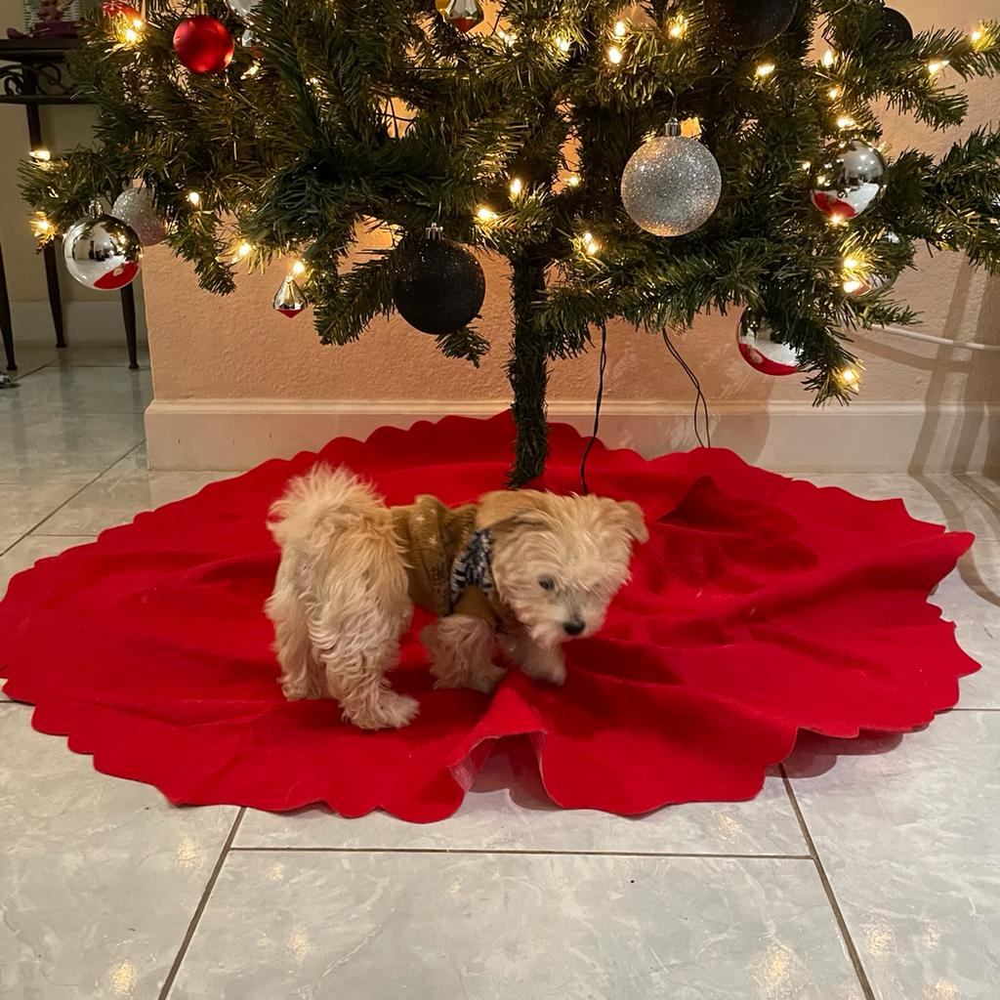
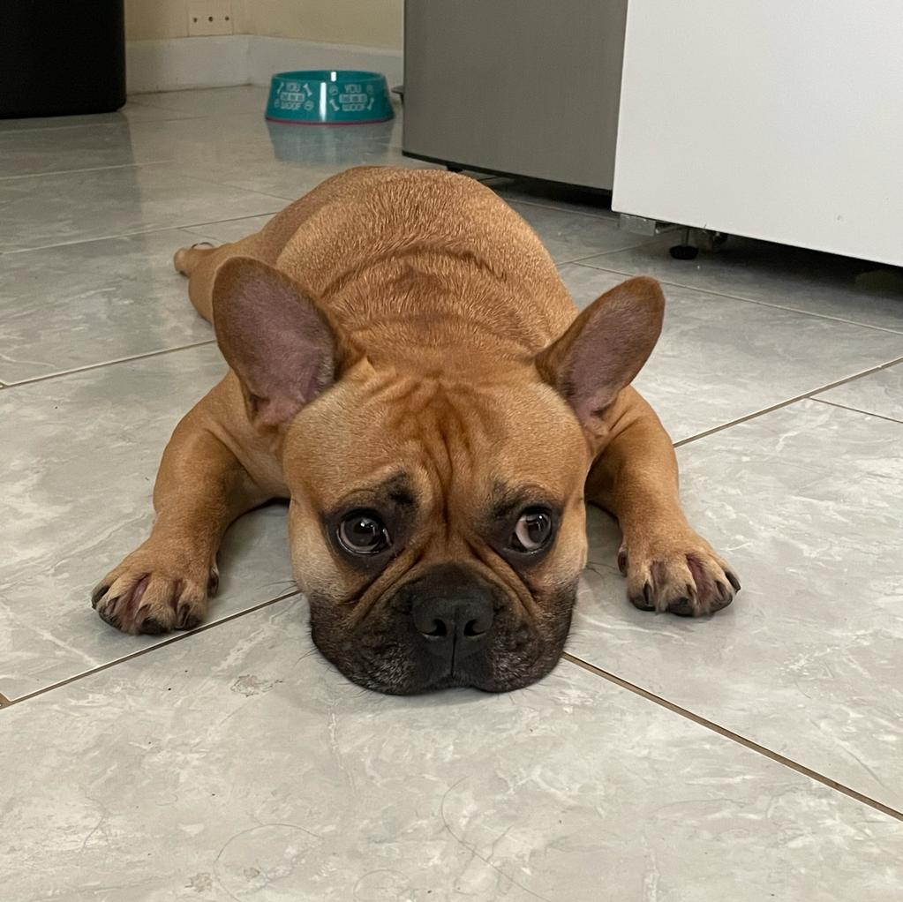
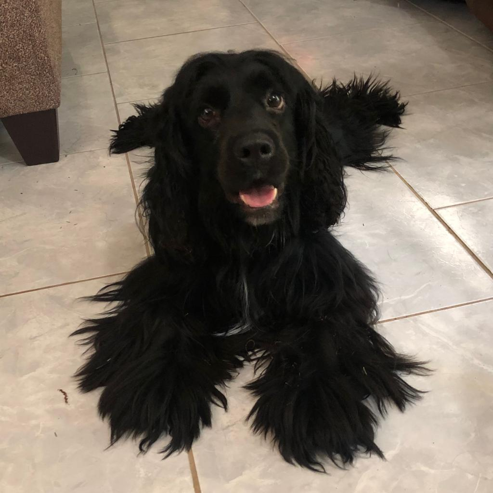

Hello my name is Juan José Gómez. I am a computer science student at USF, I love and enjoy programming and experimenting with different languages and tools. I want to find the branch of computer science that I want to focus on. this is why I have been jumping around different branches learning from various sources. Due to this I have been exposed to many different topics in the programming world such as, game development, ios development, automation using web scraping and algorithms, and software engineering and now web development. Thanks to this I've had the opprotuinity to several programming languages like, Python, C/C++, Swift, HTML, CSS, JavaScript, and more.
Aside from programming I have many hobbies and things that I love, An example of this is Dogs.
On my spare time I watch dogs with my girlfriend this are my favorite dogs.

This is HenryThis is Winston


This is Oreo